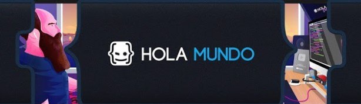

Descripcion de la pagina
El proposito de esta pagina es construir una comunidad que sea de
entrenenimiento y pasatiempos.
Aportando el contenido apropiado.
El contenido principal de este blgog es compratirles a las demas personas, que recien van empezando
en el mundo tecnologico, cabales de youtube ya sea de netretenimiento, curiosiades y novedades por
todo este ambito.
Lo cual considero que en algunos de estos canales nos ayudan a estar al pendiente de diferentes
partes de la tecnologia, asi como algunos otros nos ayudan mucho con los cursos gratuitos que
ofrecen ello.
Para ello me di a la tarea de recavar algunos canales que han sobresalido en mi formacion como
estudiante de ingenieria en software, cabe destacar que el orden todos tienen la misma valoracion
para mi.
Top canales de Tecnologia & programacion
Este canal es uno de mis preferidos, este canal siempre busca hacer contenido de acuerdo a las
necesidades de sus suscriptores
WEBartisan es un canal dedicado a la tencnologia en especiañ a la programacion, con un contenodo muy
agradable y entretenido para la comunidad.
 ESte canal no tiene nada da de tecnologia, pero sus cursos si los aplicamos en nuestras tecnologias.
este canal es de matematicas, donde el profesor alex, nos comparte todo el conocimiento posible a
traves de sus videos muy explicativos, este personaje suele crear videos muy explicativos a los
temas mas dificiles que podamos encontrar.
ESte canal no tiene nada da de tecnologia, pero sus cursos si los aplicamos en nuestras tecnologias.
este canal es de matematicas, donde el profesor alex, nos comparte todo el conocimiento posible a
traves de sus videos muy explicativos, este personaje suele crear videos muy explicativos a los
temas mas dificiles que podamos encontrar.
 Mucha dedicacion y perseverancia, es con lo que pordriamos definir a Victor Robles, el es un
propesional en la rogrmacion, en si el se enfoca mas en el desarrollo web, oferta cursos en udemy
donde el es un instructor muy valorado, por lo cuales es buen camino para aprender tecnologias como
PHP, HTML, CSS, JAVASCRIPT entre otros.
En su canal de youtube nos tiene preparado con muchos cursos que la comunidad le agradece, y de esa
misma manera nos cuentas diferentes etpas de sus vida como desarrollador web, las dificultades con
las que se ha topado, ha demas de que este personaje es español, es de buena forma aprovechado por
la comunidad hispanohablante, asi que si de desarrollo web se trata no te olvides de el.
Mucha dedicacion y perseverancia, es con lo que pordriamos definir a Victor Robles, el es un
propesional en la rogrmacion, en si el se enfoca mas en el desarrollo web, oferta cursos en udemy
donde el es un instructor muy valorado, por lo cuales es buen camino para aprender tecnologias como
PHP, HTML, CSS, JAVASCRIPT entre otros.
En su canal de youtube nos tiene preparado con muchos cursos que la comunidad le agradece, y de esa
misma manera nos cuentas diferentes etpas de sus vida como desarrollador web, las dificultades con
las que se ha topado, ha demas de que este personaje es español, es de buena forma aprovechado por
la comunidad hispanohablante, asi que si de desarrollo web se trata no te olvides de el.
ES un instructor profesional de cursos de programación en la plataforma de Udemy desde Junio de
2014, con más de 100k alumnos y 11K reseñas positivas.
Youtuber enfocado a la motivación y apoyo tanto de programadores como de emprendedores. Actualmente
el canal cuenta con más de 100K suscriptores.
El principal contenido que este hace en su canal son anecdotas de como empezo y se decidio dedicarse
a la programacion, es una persona de mexico que narra como podriamos mejorar y lo que podemos evitar
hacer si nos queremos enfocarnos en la programacion
7.Hola Mundo
